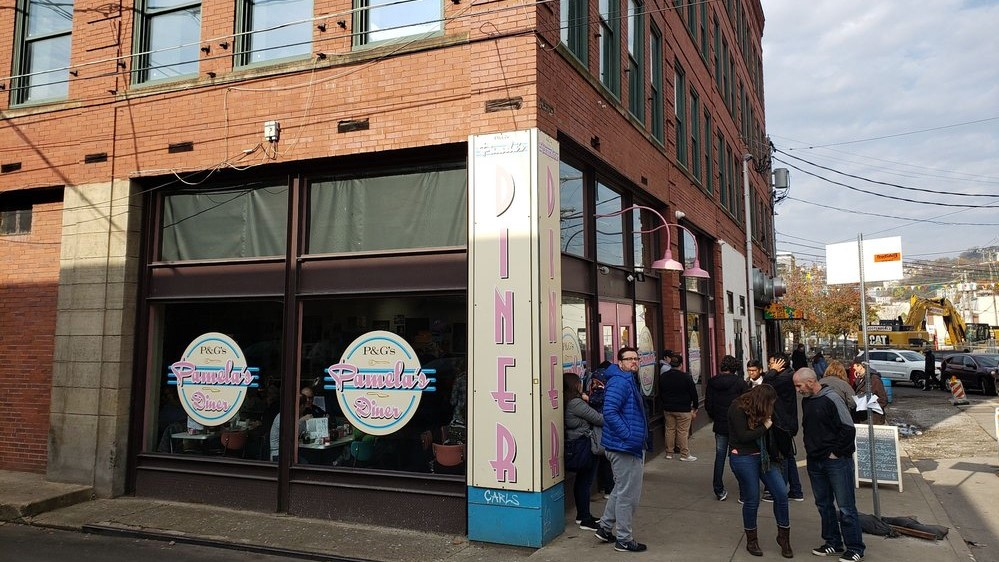

PAMELA'S DINER
PAMELA'S DINER

About
Pamela's Diner is a prominent chain of diners in Pittsburgh, Pennsylvania, USA. Its specialties are crepe-style pancakes, omelets and Lyonnaise potatoes. It is "treasured" and is considered to be in the "pantheon of pancake purveyors". In 2013, Pamela's Diner was featured by the Wall Street Journal in a "What to Do in Pittsburgh" feature story. Pamela's Diner is owned by Gail Klingensmith and Pam Cohen.[1] Both educated as teachers, the business partners handle different tasks, Klingensmith with the more business end and Cohen as "the culinary artist". The first Pamela's Diner location, in the Squirrel Hill neighborhood, opened in 1979. Subsequent locations have opened in Shadyside, the Strip District, Millvale, Oakland and Mt. Lebanon.Recent Updates
During the 2008 United States presidential election, Barack Obama visited Pamela's Diner for a campaign visit. Once elected, President Obama invited Klingensmith and Cohen to the White House for a Memorial Day breakfast with the Obama family and 80 veterans. Later that year, during the 2009 G-20 Pittsburgh summit, President Obama expressed dismay that he was unable to return to Pamela's Diner during that trip, but First Lady Michelle Obama did visit. Incidentally, the Oakland storefront received damage during the protests that accompanied the G-20 summit.Pamela's Diner announced in December 2021 that their original Squirrel Hill location will be closing largely due to COVID-19. With the loss of several long-time employees, the location decided to shut its doors. As the first Pamela's Diner location, it has been around 42 years. The other diner locations will stay open, however. The owners hinted that they are open to another, smaller Squirrel Hill location in the future.